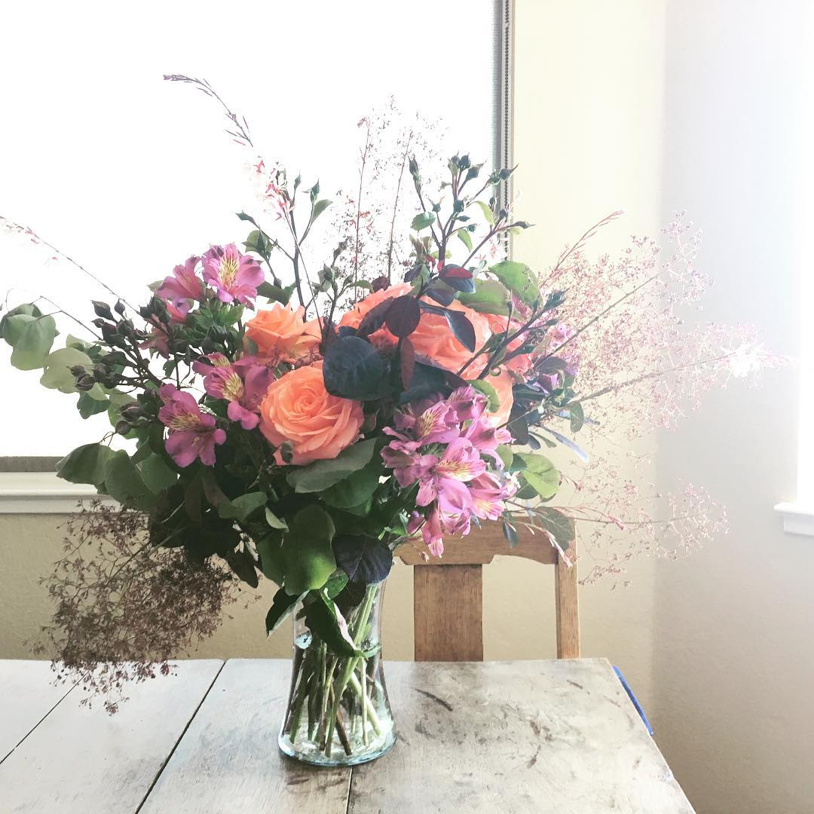
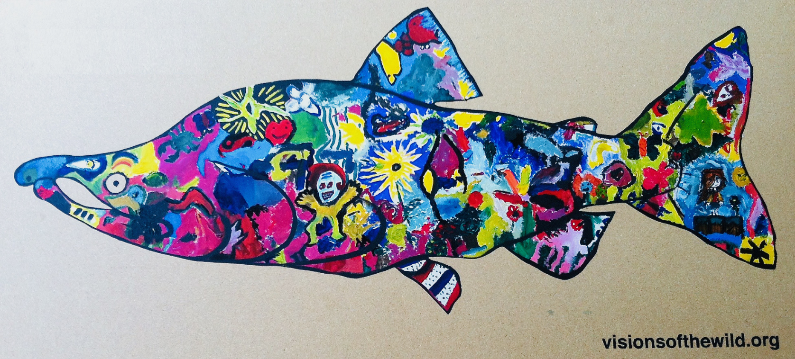
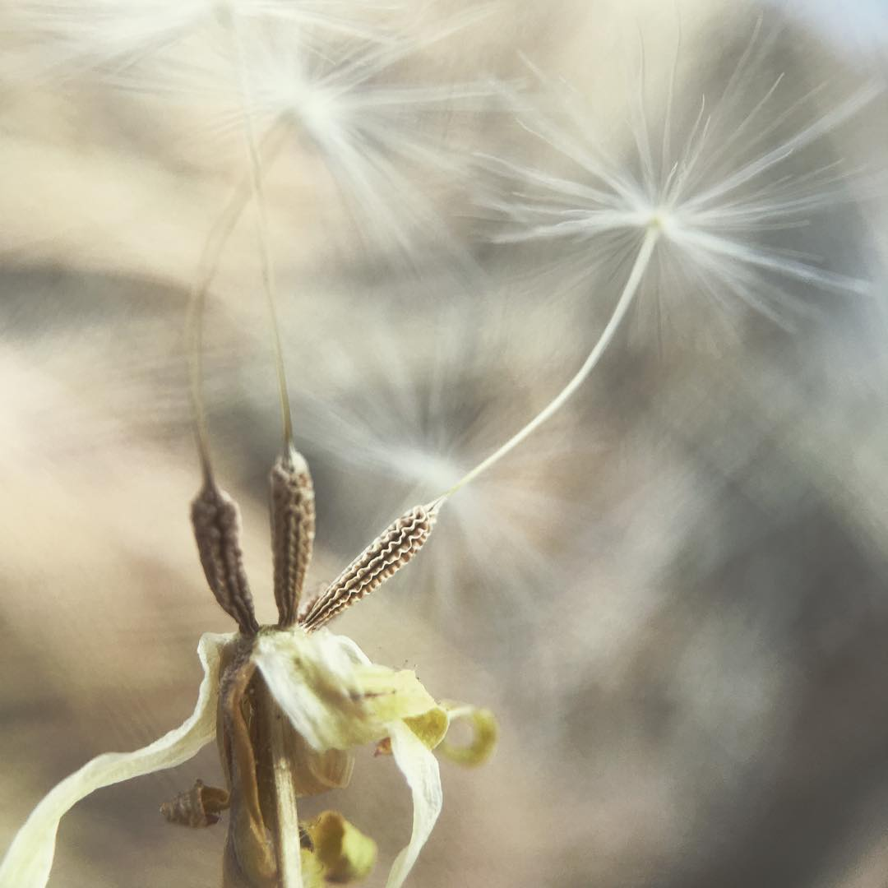
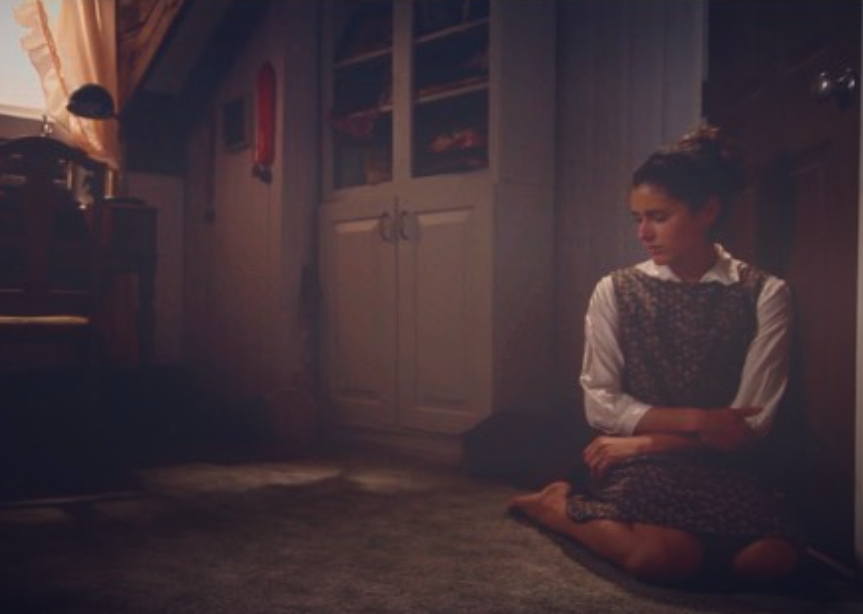
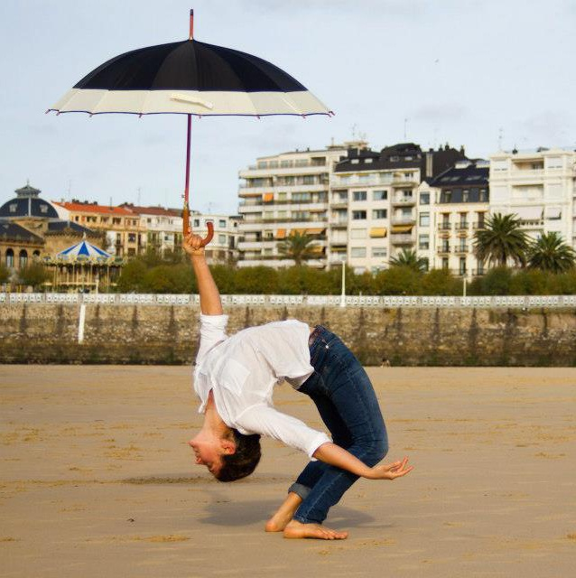
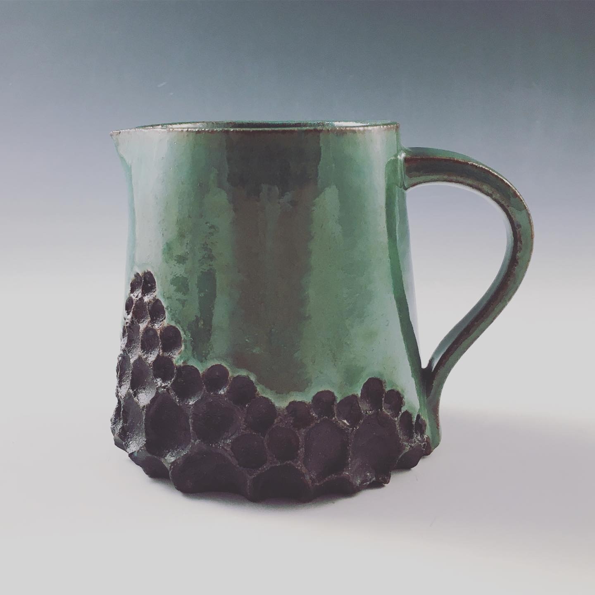
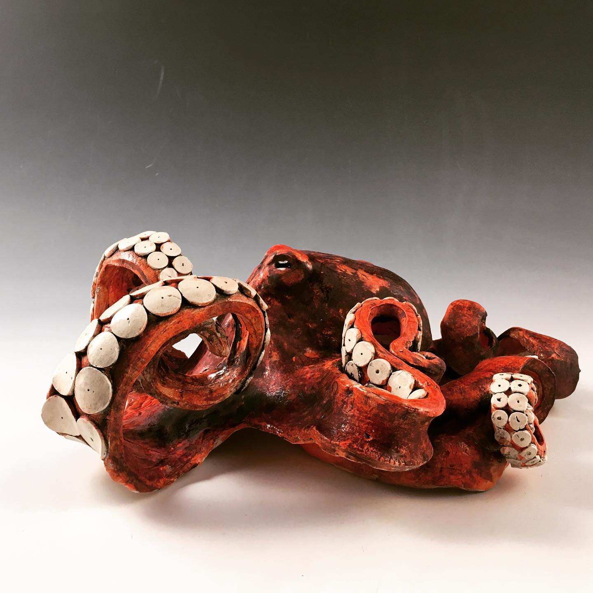

art
Like organisms of many species, I produced some of this art purely for pleasure.
florals
I’ve used floral arranging to express care for people, and to connect them to the landscape. A lot of plants seem to appreciate the pruning and propagating, too.
As part of nearly every garden care visit, I gathered a bouquet of flowers for the client. I used the greenery, flowers, and vases on hand and eschewed industry-standard equipment such as floral-foam and tape that ease designing but leave plastic and microplastic debris. These freely structured bouquets prompted many clients to exclaim with surprise and delight: “Did that come out of my yard?” Floral arrangements distilled the garden, its seasonality and abundance.
I arranged foraged materials for two family weddings, and for Provisions, a local-source restaurant in Vallejo. One gardening client repeatedly expressed worry that my floral craft would become lucrative, supercede my gardening business, and I would stop gardening for her. I haven’t yet taken flowers so far.
painting
An enthusiastic doodler, I've earned a minor award in political cartooning, a research apprenticeship in scientific illustration, and a spot in Vallejo's Art Window Project, pictured above. I made the outline for that four-foot long painting of a salmon with masking tape and primer, then invited visitors at the Vallejo Ranger Station to paint in a collage of what brings them joy in nature. The youngest participant was two. Everyone signed their names and we peeled off the tape. The salmon is one of a quartet from that project.
I post some of my drawings on Instagram.
photography
After several photographic phases as a high schooler and undergraduate, in less of in a mood for post-processing, I settled into to a quiet life on Instagram, capturing light with my iPhone 4 or SE plus a jewler's loupe for a macro lens. That phase includes most of the photos on this website. I recently made my account public: @merielmelendrezmees
performance
A passion for dance suddenly struck in my late teens. This joy opened up invitational roles to dance in the first Visions of the Wild Festival variety show, dance and act in the San Francisco Poet’s Experimental Theater, and act in the independent film Precarious. Precarious has been translated into four languages and won ten awards.
pottery
I love this elemental medium, this practice of blending earth with water and baking it with fire to hold air.
